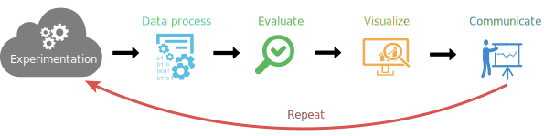

Workflow
The exreport workflow starts where your experimentation ends, using your output experimental data to help you evaluate and visualice the quality and details of your experiments and to obtain quality documents for an effective communication.

Process Load your experiments and configure them for the analysis
Load your experiments into exreport by following the Data Model or using any of the built-in helpers and preprocess your data to continue width the evaluation or visualization techniques.
Exreport provides a good range of common operations on R data.frames
adapted to the special case of the proposed experiment analysis methodology:
Filtering:
Subset
Reduce
Joining:
Combine
Concat
Extend
Sanitizing:
Find Duplicates
Check Consistency
Evaluate Robust statistical testing methodology
Exreport packages a statistical validation procedure based on sound and community accepted practiques. Check the statistical tests section of the methodology for additional bibliography.
| # Methods | Type of test | Procedure |
|---|---|---|
| Two methods | Paired test | Wilcoxon Signed Rank Test |
| More than two methods | Multiple Comparison Test + Post-hoc Analysis | Friedman Test + Holm's Procedure |
| Friedman Test + Shaffer's Procedure |
Visualize Represent your results with plots and tables
Taking advantage of the inherent structure of its experiment data model, exreport ships with several built in functions to generate a range of elegant tables and plots that are commonly found in scientific papers and reports:
- Generate a detailed table showing each method applied to every problem.
- Compare the results of your methods by obtaining an overview barplot.
- Obtain graphical representations of the statistical testing procedures.


Communicate Generate HTML or PDF reports to discuss or publish your results
After performing all the required operations and generating the desired graphical
outputs a report can be generated. Add and format the elements freely and render
the report in the format you prefer:
- HTML: Render and open an interactive report in your browser, it will be perfect to study your results or discuss them with your co-researchers. In addition you can download the pictures and tables in your image format or LaTeX code!
- PDF/LaTeX: Generate a compiled PDF document with extended information about your experiment and statistical tests as well as pictures and tables. Alongside obtain an elegantly formated LaTeX code, almost prepared to be copied into your paper!
- Automatically boldface columns of tables according to metrics.
- Split your excessively wide tables into pieces
Repeat! Save your exreport script and launch it all over again
Not satisfied with your results and want to test something else?, did you make and error in your experiments?. If you defined an exreport script to obtain your results you can launch it again an reproduce all the elements that you have already included in your paper or repeat the same report you discussed last week with your team effortless!
See it in action!Download and Install
The project is hosted on github so you can add it to your R installation via the devtools package.
# install_package("devtools")
devtools::install_github("jacintoArias/exreport")
A framework for the reproducible analysis and communication of scientific experimental results
In this section we introduce the theoretical foundations and research behind development of this framework. This is a summary of a scientific paper still on developent for this idea:
J. Arias and J. Cózar. A framework for the reproducible analysis and communication of scientific experimental results. University of Castilla-La Mancha. Unpublished.
In this work we introduce a series of concepts in order to define a methodology to perform the analysis and communication of research experimental results emphasizing reproducibility and error avoidance.
The exreport package responds to the methodology defined in this work and allow to easily implement the different steps discussed, these include:
- Experiment definition
- Data modeling
- Statistical testing validation
Experiment definition
The key point of the methodology that we propose is based on the fact that the objectives pursued for a series of scientific experiments must be fixed previous to the actual execution of the experiments and adquisition of the data.
On the other hand, it is likely that the scientific process is iterative in its nature, and that trial and error is one of the most popular approaches. So this methodology also allows extending and repeating our analysis looking for the maximum grade of reproducibility.
From now on we assume that the source of our experimental data is unknown to us, and we only have a model of such data, that we will use to define the goals of our experiment and then iterate to the proposed workflow to perform the analysis and obtain interpretable output that can be shared with the community.
Defining our experiment has two different phases: First, the properties and structure of the data must be defined in order to assure that our analysis methodology will be consistent over multiple iterations. Second, we define the validation process and the outputs that we would like to obtain for our publications.
The proposed R package exreport that we present is focused on performing this particular task.
Data modeling
Researchers use a wide range of sources for digital experimental data adquisition: i.e. different dedicated hardware and software, programming languages, etc.
In order to provide an unified pipeline for our analysis platform we have chosen a particular data model from which several transformation operations can be performed to assure consistency at the same time of elasticity.
To specify a data model it is important to define the basic elements that compose an experiment. Initially, an experiment is performed by applying a particular method to a problem, these being our basic components of our model. The output of such experiment will be given by a series of outputs. Finally, our methods can be optionally parametrized by a set of parameters.
Given the combination of the previous elements, we define out data model as a
collection of experiments composed by a method, a dataset, one or more outputs,
and optionally, a number of parameters. This particular model, can be easily
represented by a columnar structure such as the R language data.frame;
in fact, exreport experiment representation is an encapsulation of this
particular data structure.
| Method | Problem | Parameter1 | ... | Parameteri | Output1 | ... | Outputo |
|---|---|---|---|---|---|---|---|
| M1 | P1 | Par11 | ... | Par1i | Out11 | ... | Out1o |
| ... | ... | ... | ... | ... | ... | ... | ... |
| Mm | Pp | Para1 | ... | Parbi | Outc1 | ... | Outdo |
The main property of this format is its elasticity, as it allows the addition of new entries using new methods, or using existing ones on new problems. This can be done seamessly if they follow the same format. In addition, this format can be altered, by including new parameters or outputs extending the existing configurations; in general a wide range of transformations can be done to the format (Please refer to the exreport description or documentation for particular examples).
Note: exreport ships with converter utilities for transforming other common data formats to our proposal.
Statistical testing validation
When it comes to validate a series of experimental results we can find a wide range of methods, from traditional statistical tests to descriptive analytics. In the literature we can find several approaches of validation methodologies, given the scope in which this project was developed, our proposal is based on a series of Machine Learning papers that were accepted as a standard. We believe that a generalization of these methodologies can be applied to other areas of expertise as they are based on sound statistical procedures an isolate the problem to a general problem that can be associated with the proposed data model. Concretelly:
Demšar, J. (2006). Statistical comparisons of classifiers over multiple data sets. The Journal of Machine Learning Research, 7, 1-30.
García, S., & Herrera, F. (2008). An Extension on “Statistical Comparisons of Classifiers over Multiple Data Sets” for all Pairwise Comparisons. Journal of Machine Learning Research, 9, 2677-2694.
This methodology includes different tests given the properties of the source problem:
- Paired Comparison: In this case, two different methods are compared given the set of evaluated problems for a given output. In this case, the statistical test performed is the Wilcoxon signed rank test.
-
Multiple Comparison: In this case, more than two
methods must be compared for the set of problems for a given output.
The test of choice is the
Friedman ranks test.
In addition to this test the methodology proposes to perform a post-hoc
analysis, according to the cited bibliography we distinguish two cases that
can be employed:
- Control test: In this test all methods are compared to the method that has obtained the best mean rank given the target output variable. It is recommended when we want to determine if a proposal outperforms the existing ones. A Holm's post-hoc procedure is applied as explained in (Demšar 2006).
- Pairwise test: In this test all methods are compared to each other. It is recommenteded when we want to determine the best suited method regarding the overall performance for the given benchmark. A Shaffer's post-hoc procedure is applied as described in (García 2008).
Automatic Report Generation and Reproducibility
As we stated before, the final purpose of the methodology is to obtain a compact report of the defined analysis. By generating an exreport script in R, we are defining the goals to achieve with our experiments and we can thus perform or repeat the analysis and obtain the results iteratively by increasing and modifying our data model.
Our graphical and interactive generated reports are intended to serve as final elements of scientific quality publications so the process of writing a paper can be enhaced by allowing the author to refresh the plots, figures and analytic conclusions of the manuscript interactively.
Finally, if this software and its methodology succeeds, it can serve as a sharing utility between researchers, allowing the direct transference of experimental data to invite others to replicate, check and extends our conclusions.